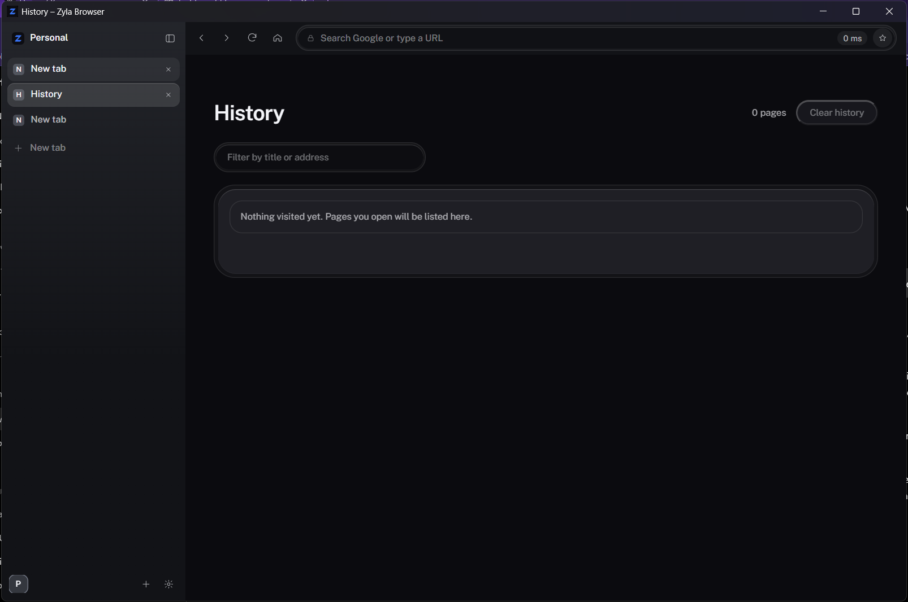
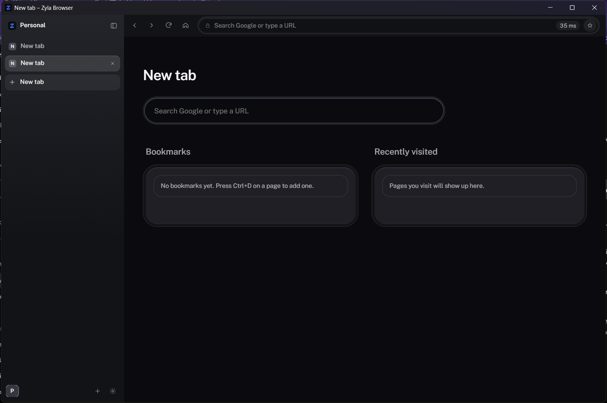

Zyla is a tabbed browser for Windows. Put any tab beside the next one with split view, keep your logins in a vault on your own PC, and do most things from the keyboard.
Ctrl+\ shows this tab beside the next tab in its Space. Press it again to end the split. Split view is not kept across restarts.
Two pages, one screen.
Passwords and cards are encrypted for your Windows user with DPAPI. Card security codes are never stored. Fill is an explicit action on HTTPS pages.
Logins stay on your PC.
Each tab is its own WebView2 instance, so a busy or crashed page does not freeze the others.
A stuck page stays alone.

History, opened from the sidebar. Ctrl+H goes straight to it.
Open a tab with Ctrl+T.
A new tab opens in the sidebar. Type a search or a web address; anything that is not an address goes to Google.

OpenHistoryTop stripBookmark
Questions, answered.
Which engine does it use?
Page content is rendered by the system WebView2 engine, which is Chromium. The browser chrome is a small web page of its own.
Where are my tabs, history and logins kept?
Open tabs and zoom levels are saved to a session file in your local app data folder. Cookies, logins, bookmarks and history live in the WebView2 profile in the same folder.
Can I install extensions?
You can add unpacked local extensions from Sidebar settings. They start after you restart Zyla. WebView2 does not host extension toolbar or popup buttons.
What is not there yet?
No find in page, no private window, no sync, and no prompt to save a password automatically. Background tabs stay loaded, so memory grows with the number of open tabs.
Where do downloads go?
To your Downloads folder. A download never overwrites an existing file.
Does it run on Mac or Linux?
No. The host is built for Windows, and WebView2 is the only engine wired up.
Build Zyla on your own PC.
You need Rust (MSVC), Bun and the WebView2 runtime, which Windows 11 already has. The build guide lists each step.